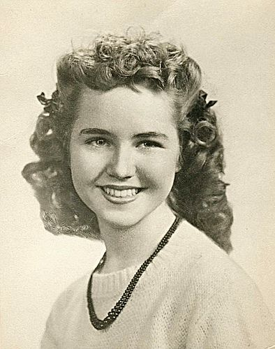

<div class="container">
  <div class="shadow">
    <h2>O nas:</h2>
    <p> Nasza nazwa swoje źródło ma w powieści "W drodze", amerykańskiego pisarza Jacka Kerouac'a z 1957 roku, oparta na
      podróżach autora i jego przyjaciół po Stanach Zjednoczonych. Książka ta znalazła się, między innymi, na 55.
      miejscu na liście 100 najlepszych powieści anglojęzycznych XX wieku. </p>

    <p>

      Bestsellerowa powieść opisuje podróż Sal Paradise, Dean Moriarty i Marylou przez USA i oparta jest na prawdziwej
      wyprawie autora. Postać Marylou odzwierciedla żyjącą w rzeczywistym świecie Luannę Henderson, która w wieku 15 lat
      została żoną jednego z bohaterów "W drodze".</p>
    
    <p>Marylou Travel jest wyjątkową linią lotniczą. Tym, co wyróżnia Nas spośród innych firm, to serce włożone w każdy
      najdrobniejszy szczegół podróży. Nieustannie rozwijamy się i udoskonalamy, aby Wasza podróż była pięknym
      wspomnieniem!</p>
    <p>Kluczowe jest dla Nas bezpieczeństwo i komfort podróży pasażerów. </p>
    <p>Marylou Travel zapewnia profesjonalizm usług i jednocześnie przystępne ceny oraz cotygodniowe atrakcyjne zniżki
      na wybrane loty. </p>
    <p>Naszych 4000 wykwalifikowanych pracowników każdego dnia z precyzyjną dbałością zapewnia wysoki standard lotu.</p>
    <p>Marylou Travel obsługuje 750 tras! Dysponujemy nowoczesnymi, bezpiecznymi i zawierającymi niezwykle estetyczne i
      komfortowe wnętrza samolotami. Nasza flota to 150 samolotów, takich jak Boeingów 787 "Dreamliner". Stale też
      rozwijamy połączenia.</p>
    <p>Kładziemy duży nacisk na to, aby podróż była bezpieczna również dla środowiska – wdrożyliśmy oszczędne
      gospodarowanie paliwem, technologie zgodne ze standardami ekologicznymi, na przykład związane z minimalizacją
      poziomu hałasu. Możemy pochwalić się także niskim wskaźnik emisji dwutlenku węgla!</p>
    <button class="btn" routerLink="/cinema">Zobacz filmowe podróże</button>
    <button class="btn" routerLink="/safety">Zobacz informacje o bezpieczeństwie</button>
  </div>
</div>
